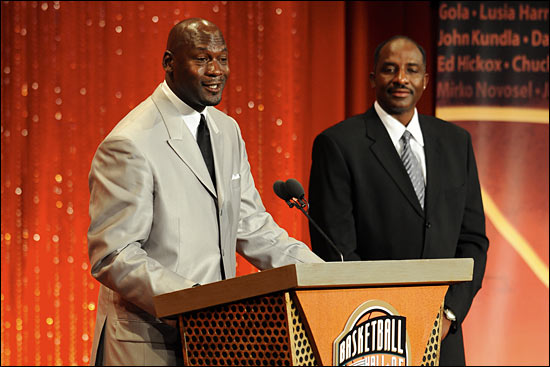
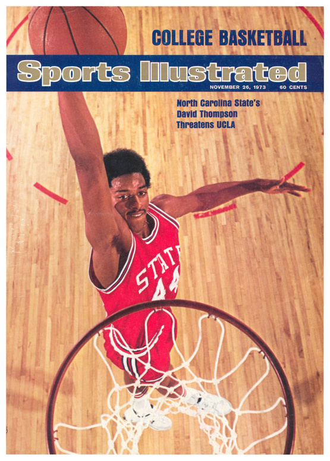

NBA/ABA showman David Thompson was the originator of the Alley-oop. When he was in college at NC State dunking was not allowed in the NCAA. he would soar through the air with grace and elevate to the basket laying the ball in the hoop. He says in his NBA TV documentary that he acquired his leaping ability in the Countryside of Shelby North Carolina his hometown. Building his own homemade hoop he would practice all day long jumping off the dirt ground. He garnered major media attention for his Wildcats dethroning NCAA titans of basketball UCLA in a 2OT classic semifinal. They went on to beat Marquette and win the NCAA championship. Michael Jordan who also grew up in North Carolina said that Thompson was the player he looked up to growing up playing ball. Jordan asked him to introduce him at his Hall of Fame ceremony.  Thompson joined the ABA after college signing with the Denver Nuggets. He performed in the legendary 1976 ABA Slam Dunk Contest against Julius Erving a legendary contest won narrowly by Dr. J's iconic free throw line dunk. The ABA merged with the NBA shortly after his arrival in the league and he continued on with Denver becoming an All Star 4 times and won the 1976 All Star Game MVP. Thompson was one of the most athletic scorers the game has ever seen and his array of ariel moves gave him the nickname "Skywalker."
